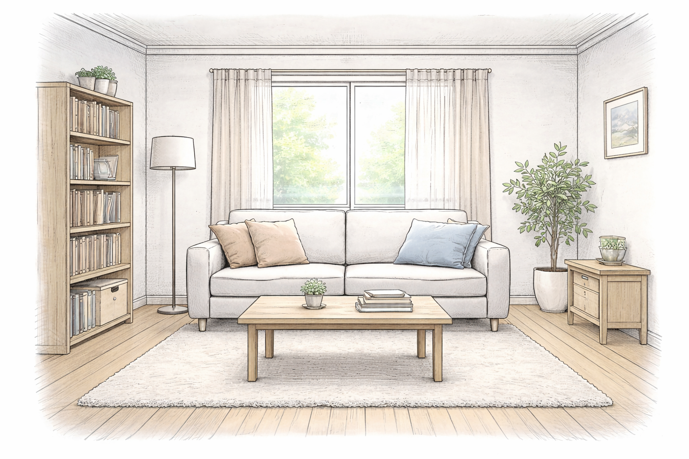

Ending A
Good Ending
Trust and focus were both positive, so the team stays calm and finishes the example together.
This line is shown by a simple condition: `statTrust > 0`.
Ending B
Bad Ending
Trust or focus dropped too low, so the team loses momentum and the example ends badly.
Trust can still be positive here if focus dropped below zero.
Debug
Live state
Current scene: none
{}
Narrator
The story is loading.